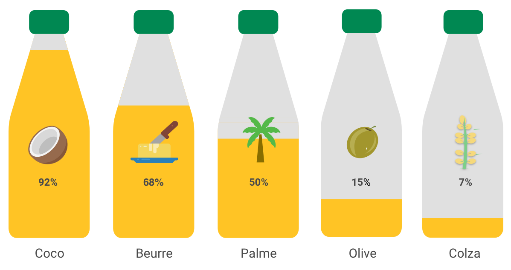

L’huile de coco, très à la mode ces dernières années, est multi-usage. Cuisine, cosmétique, soins, entretien, elle est présentée comme l’élément incontournable de nos placards. Mais est-elle vraiment bonne pour la santé ? Afin de vous aidez à y voir plus clair, Blomy a mené l’enquête et interrogé le nutritionniste Anthony Berthou. Voici ses conclusions sur le sujet !
L’huile de coco contient de très bonnes graisses : FAUX
L’huile de coco n’est quasiment composée que d’acides gras dits « saturés ». Ces acides gras sont indispensables à l’organisme mais nous en consommons aujourd’hui en excès, ce qui augmente le risque de maladies cardiovasculaires en cas de consommation importante de glucides dans l’alimentation générale (voir notre article sur les lipides).
En revanche, dans les modèles d’alimentation low-carb (riches en graisses et pauvres en glucides), la consommation d’huile de coco ne pose pas de problème de santé.
L’huile de coco possède des acides gras saturés très particuliers : VRAI
L’huile de coco est constituée à 60% de triglycérides à chaîne moyenne (TCM), des acides gras très particuliers. Ces TCM vont aller directement du tube digestif vers le foie, et ainsi apporter plus rapidement de l’énergie aux cellules (cœur, cerveau, muscles). Certains mettent en avant le fait que la particularité de ces acides gras ferait de l’huile de coco une huile très intéressante pour la santé. Cependant, notre alimentation occidentale classique permet déjà de fournir de l’énergie rapidement à nos cellules. La teneur en TCM de l’huile de coco n’apporte donc rien d’intéressant.
En revanche, les TCM peuvent être utilisés pour optimiser un régime low-carb (ou cétogène) pauvre en glucides. En effet, les TCM permettent de produire plus facilement et plus rapidement un carburant alternatif aux glucides pour les cellules.
L’huile de coco est meilleure pour la santé que l’huile de palme : FAUX
L’huile de coco contient 92% d’acides gras saturés. Sa cousine l’huile de palme n’en contient que 50%.
En comparaison, le beurre est composé à 68% de ces acides gras dit « saturés », l’huile d’olive à 15% et l’huile de colza à 7%. L’huile de coco est donc beaucoup plus riche en acide gras saturés que la plupart des matières grasses.

L’huile de coco est souvent utilisée dans l’industrie agroalimentaire : VRAI
L’huile de coco, au même titre que l’huile de palme, est souvent utilisée par l’industrie agroalimentaire dans les pâtisseries industrielles, confiseries et fritures. Mais les industriels emploient rarement de l’huile de coco vierge extraite à froid, obtenue à partir de la chair fraîche du fruit. Ils utilisent de l’huile de coprah, moins chère, qui est faite à partir de la chair séchée. Cette huile subit de nombreux traitement, notamment l’hydrogénation.
L’hydrogénation peut être totale ou partielle. L’hydrogénation partielle est la plus dangereuse car ce procédé transforme les acides gras saturés en acides gras trans, très mauvais pour la santé et à éviter au maximum. En effet, ils augmentent fortement le risques de maladies cardiovasculaires, mêmes consommés en faible dose. Mais les industriels ne mentionnent pas toujours sur les produits si les graisses ou huiles utilisées sont totalement ou partiellement hydrogénées.
Quant à l’huile de coco hydrogénée (ou huile de coprah), elle n’est pas clairement identifiable sur la liste des ingrédients de nos produits. On peut la trouver sous les dénominations : « huiles végétales hydrogénées » « huile végétale partiellement hydrogénées », « matières grasses végétales » ou plus rarement « végétaline ». Au rayon huiles, l’huile de coprah est identifiable sous le nom « huile de coco désodorisée », ne vous faites pas avoir !
L’huile de coco est adaptée pour la cuisson : VRAI
L’huile de coco supporte les hautes températures : elle ne se détériore pas sous la chaleur et ne devient pas toxique, ce qui en fait une huile intéressante pour la cuisson. Son point de fumée, c’est-à-dire la température à partir de laquelle de la fumée est détectée et que des composés toxiques commencent à se former, est de 232°C lorsqu’elle est raffinée. Attention, l’huile de coco non raffinée supporte moins bien la chaleur, son point de fumée étant de 177°C.
Mais l’huile d’olive est tout aussi intéressante pour la cuisson car elle supporte également de fortes températures. L’huile d’olive raffinée a ainsi un point de fumée de 252°C. Les huiles d’olive plus fines sont en revanche plus sensibles : le point de fumée de l’huile d’olive vierge est de 216°C et celui de l’huile d’olive vierge extra est de 160°C. Réservez donc vos huiles d’olive fines pour l’assaisonnement (voir notre article sur l’huile d’olive).
L’huile de coco est riche en vitamines et minéraux : FAUX
La noix de coco fraîche est un aliment riche en vitamines et en minéraux. Mais sa transformation en huile lui fait perdre tous ses avantages nutritionnels. Elle ne contient plus aucun minéraux et quasiment plus de vitamines, mis à part des petites quantités de vitamine E qui lui confère un léger rôle antioxydant. L’huile de coco garde un avantage, il s’agit de sa teneur en agents anti-bactériens qui aident à lutter contre les infections intestinales.
Finalement, que faire ?
Vous pouvez tout à fait vous passer de l’huile de coco, qui n’apporte rien d’exceptionnel par rapport aux autres huiles. Si vous souhaitez en consommer tout de même, voici quelques conseils :
- Consommez l’huile de coco avec modération (sauf en cas de modèle cétogène ou low-carb) , et réservez-la uniquement à la cuisson de manière ponctuelle en alternant avec d’autres huiles, comme l’huile d’olive
- Choisissez-la vierge extraite à froid afin de bénéficier de la vitamine E et des agents anti-bactériens
- Evitez l’huile de coco désodorisée (coprah) riche en acide gras trans si elle est partiellement hydrogénée
- En dehors de la cuisson, privilégiez les huiles riches en oméga 3 (lin, noix, colza) et en oméga 9 (olive, colza, sésame)

Bonjour!
Je pense que cette article n’est pas mis à jour en effet il est assez simpliste voir faux!
Il faut investir dans un nutritionniste dans l’equipe car un bon nutritionniste ne peux surement pas valier cela?
Bonjour
Merci pour toutes ces infos
Vraiment
Si l’huile de coco est séparée gras blanc durcit et huile transparente sur le dessus du pot, quoi faire ?
Mais comment on faisait avant la venue de Blomy!!!🤔
Merci pour cet éclairage sur l’huile de coco, une fois de plus vous nous renseigner sur des sujets intéressants et intelligents !!!😊
Il serait bien de faire un ménage dans les commentaires, il ya un parasite tordu et voilé ..
C’est lamentable de comparer l’huile de coco à l’huile de palme ! Cet article est bourré de désinformations, les lobbies industriels ont bien bossé …
Le manque de culture et l’arrogance occupent également une belle place 😉
L huile de palme est (très) décriée en raison de la déforestation que sa culture provoque … mais fondamentalement, ce n’est pas une huile nocive pour la santé! Et beaucoup d Africains en consomment sans aucun problème de santé , semble-t-il
C’est pour l’essentiel l’argumentation des lobbys américains dépuis 1940. Cela veut dire que la désinformation à de beaux jours devant elle, soit par ignorance, soit par malhonnêteté consciente ou non. C’est désespérant.
On sent que l’industrie laitiere s’affole un peu pour écrire des âneries pareille sur l’huile de coco…
wonderful issues altogether, you simply gained a new reader.
What could you recommend about your put up that
you made a few days in the past? Any certain?
Et quand elle est ds le beurre comme primevere on dit quoi ?
Et que penser du sucre de fleurs de coco?
c cool
Alors que l’on redécouvre que l’on mange trop peu de gras saturé, vous suivez l’ancien modèle? Je suis d’accord pour l’excès d’omega 6, mais votre app ne tient pas compte des quantités consommées, et vous « plombez » même un bon beurre cru? Aucune huile végétale moderne n’était disponible et nos récents ancètres se portaient bien avec le gras animal, tant que les animaux n’étaient pas nourris à base de céréales pleines de graisses polyinsaturées…. mot qui veut dire graisse à chaine instable… Même le porc et le poulet ont trop d’omega 6 de nos jours…. Seuls les ruminants ont encore une graisse correcte!
Les acides gras saturés ne sont pas mauvais pour la santé comme vous le sous-entendez, c’est comme le cholestérol, il existe du bon gras !
Ça serait bien qu’ils le rectifie effectivement…
Tres bon pour lasecheresse vaginale jutilise effet appaisant con
nike t mort gros fdp
et ta soeur ?
Bonjour Julie merci pour ces précisions concernant l’huile de coco. Bonne journée
video thierry sur les cocoshttps://www.youtube.com/watch?v=Aeu0bW-OpRo
J’ai vu de l’huile de coco epaisse et dans des magasine bio de l’huile de coco fluide liquide . Pourquoi et laquelle choisir
L’huile de coco a la consistance du beurre mais si elle est un peu chauffé ou bien avec une température ambiante plus grande elle se liquéfie. Vous ne trouvez normalement pas d’huile de coco dure et une autre liquide au même endroit.
je me sers de l’huile de coco pour remplacer le dentifrice, qui contient de l’aluminium. Par contre je consomme de la coco fraîche. Je ne connais pas les taux d’apport pour notre santé, je sais uniquement que la chair n’a pas ce côté calorique …….. une video de Thierry nous éclaire sur des recettes https://www.youtube.com/watch?v=MWvVw8CO28Y&feature=youtu.be
Tu te brosses les dents avec de l’huile de coco ? Misère 🙄
Je n’arrive Pas à scanner les produits « comme j’aIme « ?
Peut-on m’aIder ?
Yukon ma été recommandée par ma psychomotricienne et j,adore merci
j’ai une polyarthrite et on m’a dit qu’une cuillère à soupe d’huile de coco par jour améliorerait mes douleurs articulaires est ce vrai?
Merci de me répondre
bonjour ,
j ai commencé le » lait d ‘ or » a base de curcuma et pour le consommer j ajoute 1 cac d huile de coco dedans …normalement cela devrait etre 1 cas mais la dose que j y mets est bonne pour moi …
c est le 4 eme jour et j ai déjà 1 amélioration notable ….
je ne savais plus ce qu était de vivre sans douleur ….LA JE REVIS ….je vous le conseille vivement .
ps: j evite au maximum toute médication chimique suite a de graves effets secondaire en 2015
Pas encore vraiment testée mais blomy m’a été vivement recommandée par ma diététicienne. Jecrois que c’est un des meilleurs compliments que l’on puissevous faire
Et que dire de la crème de coco, utilisée dans des recettes exotiques ou en remplacement de la crème ordinaire quand on doit supprimer tout produit laitier (de vache), à cause des proteines et du lactose ?
K1o
c ‘est une application formidable! que de déception en découvrant dans mes produits habituelles des additifs nocifs, grace a blomy je revoie toutes mes habitudes alimentaires.
je recommande autour de moi
Merci !
je l’utilise en cosmétique avec quelques gouttes d’H.E géranium rosat ou autre qu’en pensez vous ?
Merci….
derien
Un grand merci pour votre application simple d’utilisation.
Depuis quelques temps, nous recevons beaucoup d’informations concernant l’alimentation et il devient difficile de savoir quel produit acheter qui ne soit pas néfaste à notre santé.
Un grand merci pour cet éclairage . Dans les fameux cappuccino à la mode il y’a huilé de palme ou copeaux je ne savais pas ce que c était. Merci
Merci pour cet article très clair ne connaissant pas l’huile de coco c’est une bonne information ainsi que votre application
Bravo, et merci pour votre application qui va peut-être sensibiliser un peu plus de gens. Pour moi, elle va me faire gagner un temps fou chaque fois que je vais aller faire les courses. Fini de scruter chaque emballage avec une loupe pour certains tellement c’est écrit petit.
Michèle
Julie, merci pour toutes vos informations c est un régal de vous lire et de s instruire sur vos bons conseils Yvette
Bonjour, merci pour cet article et tous les autres.
Concernant l’utilisation de l’huile de coco dans un déodorant maison, qu’elle est votre conclusion ?
Merci Sophie
Plus on est on plus on en redemande
Intéressant
Bonjour j’ai passé un bon moment à mir cet article
Très bon travail
J’adore
Merci pour cet article mais qu’en est il du lait de coco
L’ huile de coco est constituée uniquement de matières grasses et obtenue via pression des noix fraîches de coco. Le lait ou la crème de coco sont issus de pulpes de noix de coco râpées et filtrées et sont beaucoup moins riches en graisses. Leur principal problème est qu’ils contiennent presque toujours un additif douteux : les carraghénanes.
Finalement on ne sait plus qui croire?????
je pense que l’essentiel est notre ressenti personnel…….
Une fois c’est bon pour le cœur et le cholestérol et là c’est tout l’inverse qui est dit??????
Et l huile de coco pour la peau c est plutot bien ou plutot pas bien?
@ Nicole
Tout ce ce que l’on croit savoir vient du lobby des marques et de leurs pubs fantaisistes et toxiques.
Notre tête est remplie de choses fausses.
Un nutritionniste indépendant est probablement plus crédible.
@Julie de Y
A propos, comment le travail de l’équipe Blomy est-il perçu par les industriels, les lobbies, les scientifiques vendus, les grandes surfaces … ?
Cordialement,
bonjour ,
je ne mets pas en cause vos recherches , mais en ce qui concerne l huile de coco ( evidemment celle qui n est pas transformée) il semble qu elle soit bonne pour la santé car a l intérieur du corps les acides gras se transforment ….il faut vous diriger sur des sites de santé nature qui mettent a jour la véracité de la noix de coco.
depuis les années 80 , on a incriminé le beurre pour des margarines « végétales » mais cruellement transformées pour nous dire 30 ans après que ces meme margarines nous sont nocives mais que le beurre nous est benefique a dose normale et non cuit bien entendu .
LA NATURE NOUS APPORTE TOUT CE DONT NOUS AVONS BESOIN !! L HUILE DE COCO EN FAIT PARTIE
N’oublions pas les dérives de la sur consommation d’huile et lait de coco sur la planète et l’environnement : sur exploitation des terres et surtout des animaux… https://www.francetvinfo.fr/economie/emploi/metiers/travailler-avec-les-animaux/des-singes-travaillant-a-la-recolte-des-noix-ce-coco_2445512.html
Et j adorais toutes les sauces à base de coco… Mais j en reviens et pas que pour ma nutrition
tgl.Merci
Merci our cet article si intéressant
Merci pour ces précieuses informations.
Merci pour cet éclairage,
en ce qui concerne l’huile d’olive, j’avais cru comprendre qu’il fallait éviter de l’utiliser pour la cuisson.
est-ce Vrai ou est-ce faux?
merci d’avance de votre réponse
Oui, Patrick, je viens de decouvrir / mon médecin m’a expliqué que chauffer de l’huile d’Olive dans la Poêle ou le wok c’était pareil que de mettre du Beurre!!! 😮 et le chauffer 🙁 moi qui croyais bien faire …
L’huile d’Olive n’est pas stable et se transforme si on la chauffe; il ne faut surtout pas cuisiner avec. Le moins possible. Mais on peut mettre un filet d huile d olive sur un mets après cuisson, poisson au four, légumes, ratatouille… etc
Je découvre l huile de coco depuis peu, et j’en suis satisfaite : elle n a aucun goût ! Ce midi avec de la polenta « grillée ». Nickel.
Un grand Merci Julie pour ces articles.
Pourriez-vous un jour faire le point Conseil avec vos nutritionnistes sur le Cholestérol et le Chocolat noir, le Fromage et le pain et les limites par jour pour conserver un peu de plaisir 🙂
Pour ma part, 10g de chocolat noir >70%, que du fromage de chèvre frais, que du pain céréales
Merci encore
Avec plaisir ! Pour le chocolat on a déjà fait un article sur le sujet : https://blomy.io/le-chocolat-cest-bon-pour-la-sante/
Idem pour le pain : https://blomy.io/meilleur-pain-pour-la-sante/
intéressant, idem pour le lait de coco…pas bon du tout pour ceux qui ont du cholestérol
Très intéressant j utilise de temps en temps ! Merci blomy 😀
Tout d’abord je tiens à Vous remercier de prendre du temps :de Votre Temps Libre: pour Éduquer notre population qui mange des cochonneries 🤮 depuis des années !!
L’industrie alimentaire + pharmaceutique qui s’enrichissent 🤑 et nous empoisonnent ☠️ grâce à notre Stupidité et notre fainéantise !!!
Aller au marché 👩🌾👨🌾, chez les petits producteurs 👩🌾👨🌾 => produits sains de saison et moins chers (pas de tête de gondole/pas de superflu 🤩)
👩🍳 👨🏻🍳 les recettes les plus simples sont souvent les meilleurs repas
bonne journée à Tous
Merci beaucoup Valérie pour ton soutien ! Et en effet, rien de mieux pour la santé que le fait maison 😉
Merci, c’est une huile que je ne connaissais pas, donc découverte des qualités et défauts de ce produit.
Merci pour vos conseils! 👌
Avec plaisir Julie 🙂
Bonjour, un grand merci à l’équipe Blomy pour cet article et pour beaucoup d’autres d’ailleurs. Je ne consomme pas d’huile de coco mais beaucoup d’huile d’olive vierge extra et je viens d’apprendre qu’il va falloir que j’achète de l’huile d’olive raffinée pour la cuisson. Encore merci et bravo pour votre passion.
Merci pour l’info. Qu’en est il du lait de coco ?
Merci pour cette info
Merci pour toute c’e infos . Je peut plus m’en passer
moi je peux plus me passer de toi
je connais votre application depuis 3 mois et je la trouve super je ne fais plus mes courses de la meme facon et meme si j’ai l’air stupide en scannant mes produits, je trouve que c’est tres important.encore merci mais je suis un peu desolée d’avoir appris recement que votre application deviendra peut etre payante parce que tout le monde n’a pas forcement les moyens et ce sera encore les plus riches qui mangeront mieux.
Ravie que l’application te plaise ! Concernant l’application, elle ne deviendra pas payante : ce qui est gratuit aujourd’hui le restera. Ce qui sera payant et optionnel, ce sont les nouvelles fonctions que l’on va rajouter (analyse des cosmétiques et produits d’hygiène notamment).
Merci pour toute ces infos très utiles pour le consommateur. A Quand les infos sur les produits scannés inconnus . Merci à toute l’équipe.
Avec plaisir ! Pour les produits inconnus, sache que tu peux les renseigner directement dans l’application 🙂
Bonjour,
J’ai adoré cet article car il m’apprend beaucoup sur cette huile. Merci beaucoup
Très intéressant. Merci je vis dans les îles . Nous utilisons la coco râpée pour en faire le « lait » pour le punch par exemple ou pour les patissero. L huile nous L utilisons sur les cheveux et le corps mais sans abus et sans aller au soleil( on evite les fritures) Jamais l huile de coco n à été utilisee en alimentaire … tant mieux!
Rien sur les cosmétiques 😕. J’en utilise uniquement sur le corps et les cheveux
Je rebondis à mon précédent post. Voici un lien qui dit le contraire de votre article et qui est intéressant et plus complet puisque dans les liens, il y a des explications poussées. Et lui, il cite des études scientifiques.
Je ne veux nullement vous provoquer, au contraire, votre approche et vos partages et travaux pour nous sont louables et je vous en remercie le premier, mais je veux bien que vous nous répondiez par rapport à cet article que j’ai choisi au hasard. il y en a d’autres avec beaucoup plus d’études qui vont dans le même sens, sachant que ma réaction et aussi dans un but de manger sain et d’être en bonne santé:
http://www.jydionne.com/l-engouement-pour-l-huile-de-coco-est-il-fonde/
Ah et pour info, j’avais une dermatite atopique derrière les genoux depuis plus d’un an. Rougeurs, suintements, démangeaisons, etc… C’est une atrocité en terme de démangeaisons
La cortisone n’a pas marché, c’est revenu dés l’arret en pire.
La propolis, l’ail, les huiles essentielles non plus.
Par contre, pour moi, l’huile de coco bio à réussi à en venir à bout en 3 semaines à raison d’une application par jour en massant. Ca fait 21 jours que j’ai arrêté l’huilera il n’y a plus rien, et c’est toujours pas revenu.
Ca, c’est du vrai et vécu.
fils de gay
Bravo pour votre application qui aide à mieux manger.!!!
dans votre recette de sablés, vous utilisez de l’huile de coco ! dans le comparatif bouteilles remplies d’huile, le beurre est moins mauvais alors pourquoi utiliser l’huile de coco ?
Bonjour Florence ! Effectivement on a mis de l’huile de coco pour les sablés car on nous demande beaucoup de recettes sans lactose.
Un immense merci ! j’ignorais tout ça et nous voilà éclairés donc je continue l’application corps cheveux, je ne l’avais jamais utilisé en cuisine
Avec plaisir Barbara, ravie que ces articles puissent être utiles !
Merci beaucoup pour cet information complète ! C est beaucoup plus clair 👍, katia
et l’huile de coco comme masque capillaire avant le shampoing
merci
et le lait de coco mis dans la préparation d’aliments qu’en pensez vous svp
Merci pour vos 2 réponses
odette.g
Bonjour et merci pour ce travail.
Cet artcile est intéressant, mais je rejoins l’avis d’autres lecteurs concernant les références consultées pour la rédaction!
Je suis assez curieux de consulter une partie de ces articles, pour avoir une idée plus claire.
Pourriez-vous les partager ?
Je renouvelle mes encouragements pour votre équipe et votre application!
Bonjour , je souhaite vous faire une remarque concernant le petit bargraphe du sucre dans vos analyses produit ,je pense que ce serait bien d’avoir la correspondance avec la quantité de sucre contenue dans une petite cuillère à café; exemple 20g = 4 petites cuillères à café, j’imagine mieux sous cette forme ce que celà représente. Qu’en pensez-vous ?
Bonjour Julie,
Tout a fait exact ! De très bons conseils !
Merci Julie !!
Avec plaisir Bernard 🙂
hello Blomy, merci pour cet article qui remet les choses en place ! moi j’utilise cette huile uniquement en cosmétique… 😁
Sans oublier huiles de cameline ,chanvre et pépins de courge
merci beaucoup pour ces précieux renseignements
j ai achete de l huile coco en decembre cla semblait à la mode dans les magazines !!
mais malgré tout je m en méfiais déjà et je l’ai utilisé une seule fois
peut elle me servir à autre chose ?soins ,ménage ?
merci pour votre aide
Bonjour
Si je peux oser une réponse, oui bien sûr si elle est bio. En masque pour les cheveux et en massage léger pour le corps l’été, on masse en long sur les muscles et en rond sur les articulations (on y passe pas des heures non plus) on attend 10 mn avant d’aller se doucher, l’hiver il est préférable d’utiliser huile de sésame (bio de table) car c’est une huile plutôt chauffante et le coco l’été ça sent si bon !
Aujourd’hui dés qu’un nutritionniste avance une idée ! on peut être certain que ses confrères vont le contre dire !
Qui croire ,
Merci. C’est clair précis complet. top.
oui cette mode de l’huile de coco est absurde.
je me souviens d’une prof de bio qui disait que l’huile de coco était plus proche de la paraffine (de la bougie donc) qu’autre chose.
Merci pour cette communication qui permet de clarifier les Étiquettes produits.
Super intéressant! Bien documenté,avec des valeurs comparatives très pratiques. Merci
Merci beaucoup 🙂
Merci pour infos utiles, bravo pour votre site!
Merci beaucoup Nadine, avec plaisir !
Et l’huile de pépins de raisin que vaut elle?
L’huile de pépins de raisin est très riche en Oméga-6, qui sont des graisses que nous consommons aujourd’hui en trop grande quantité. Ce n’est donc pas la meilleure huile.
Merci pour tout ce que vous nous apportez. Les idées reçues sont souvent fausses malheureusement.
merci pour cette précision, très utile comme toujours!!
Et c’est aussi un très bon article ♥️
merci pour cet article, c’est très intéressant.
Et concernant son utilisation sur la peau et les cheveux? qu’en dites vous?
j utilise rarement le lait de coco pour cette raison précisément. mais quel délice dans les plats exotiques indiens ! a consommer peu je suis d’accord!
merci pour votre travail de recherche et d’information.
Merci
Article très intéressant et utile.
JE partage 🙂
Merci beaucoup pour ces infos.
Très intéressant à l’heure où l’huile de coco est présentée un peu partout comme le produit miracle ! Gardons l’esprit critique.
Merci Julie
Vos conseils sont précieux
Cordialement
Avec plaisir Catherine 🙂
Depuis que nous avons télécharger Blomy sur mon portable téléphonique les courses en magasin se font autrement . Très souvent nous contrôlons la composition des produits avant d’acheter
Merci
Merci
Merci pour le renseignement sur l’huile de coco.>J’aime lire vos commentaires qui sont très intéressant.Cordialement
TRES INTERESSANT MERCI
Bonjour,
Comment trouver votre App sur l’apple store, j’ai rentré Blomy et je ne trouve pas votre logo depuis l’Apple store Suisse.
Merci bcp, j’adore vos articles!!!
Malheureusement, l’application n’est disponible qu’en France pour le moment. Mais la Suisse fait bien partie de nos projets 🙂
Merci pour ces informations très utiles.
Je garde l’huile d’olive et l’huile de noix et j’utilise l’huile de noix de coco avec modération 😉
Avec plaisir 🙂
Merci Julie pour ces précieuses informations.
Merci julie
Bonjour,
Mille fois merci Julie pour toutes ces informations, riches en renseignements et en conseils.
Depuis que j’utilise l’application « Yucka » je beaucoup plus vigilant qu’avant, encore MERCI.
Bonjour Julie et Floriane,
Qu’en est-il de l’utilisation en cosmétique de l’huile de coco ?
Intéressant
Merci
Bravo à l’équipe Blomy
j’ai pris le temps d’ouvrir ma réserve épicerie…..j’ai fait du vide
merci pour tous ces bons conseils
Merci Catherine, très contente que l’application ait pu t’aider à faire le tri !
Ok bien reçu est tout à fait d’accord me concernant je consomme que de lhuile’olive dans tout ces domaines de cuisson à froid ou chaud et excellent pour lorganisme alors faite comme moi utiliser que cette huile et ne plus acheter margarine ou autre substitue de beurre bref cuisiner naturel avec les bon produit de notre terroir français cordialement Philippe
Bel article
Merci sur pour l’éclairage sur ces idées reçues
Merci Flo 🙂
Une mise au point indispensable.
Merci
merci pour cet éclaircissement car depuis que l’huile de palme est montrée du doigt, beaucoup d’autres huiles apparaissent sans que l’on sache vraiment si ce n’est pas, au final, la même chose ou voir même plus mauvais.
vous le confirmé.
un grand merci à vous
Bonjour, des études tendraient à montrer qu’il n’y a pas de bon ou mauvais cholestérol, il n’y a que du cholesterol, essentiel au fonctionnement de notre cerveau. De plus, il n’existerait pas de lien direct entre taux de cholestérol et AVC (voir les documentaires et les articles scientifiques sur les dangers des statines).
Personnellement, j’ai choisi d’utiliser cette huile pour la cuisson de certains aliments, œufs ou légumes par exemple.
Auriez-vous un avis sur la question ?
Bonjour, tout comme la remarque qu’a faite « le poilu », je suis convaincue qu’il n’y a pas de bon et mauvais cholestérol, pas de lien non plus entre cholestérol et infarctus, et qu’il s’agit surtout d’une histoire de gros sous pour nous vendre des statines. Personnellement je n’utIlise que de l’huile d’olive. J’aimerai également connaître votre avis sur la question. Merci
Effectivement, le cholestérol n’est pas forcément associé à un risque cardiovasculaire accru : si l’excès de cholestérol peut contribuer à augmenter le risque de maladies cardio-vasculaires, il semble aujourd’hui loin d’être le facteur qui a le plus d’impact. On a supprimé cette mention dans l’article pour que les propos ne portent pas à confusion.
Merci pour tous ces renseignements
Merci à vous pour vos conseils précieux
Bonne continuation
C’est pour quand blomy cosmétique?
Bonsoir,Merci pour tous vos articles toujours très interressants. Et Merci,Merci pour votre super application dont je ne me sépare jamais. Je flash et si blomy me dit non je repose et si c’est oui ça va dans le caddie. J’attend l’appli pour les cosmétiques bonne continuation.
Marie-France M.
Pour les cosmétiques, il existe l’appli Clean Beauty, très efficace !
Avec plaisir 😉 Les cosmétiques sont prévues d’ici 1 mois sur iPhone dans un premier temps, et un petit peu plus tard sur Android.
Merci pour les informations. J’utilise régulièrement l’aplication Blomy qui m’apporte entière satisfaction. Je suis sensible et attentif aux additifs présents dans les aliments. Les résultats sont impressionnants lorsqu’on compare les différents produits vitaux.
Merci pour votre professionnalisme.
Cordialement.
Marc Weber.
Merci beaucoup Marc, je suis ravie que l’appli te plaise et te soit utile !
Merci pour l’info.
Ouah ouah salut merci beaucoup pour cette info car j étais tombée dans ce piège d intox mais j avais arrete d achette car étant en arrêt maladie longue je n ai plus les moyens de me payer du surperflus..
Comment c est dingue que l on se fait berné à tous les niveaux
Je suis exctrement malheureuse pour mes petits enfants
Notamment pour ma petite yuni(sa maman est javanaise et bien triste de cette situation en France bien pourrie) qui est née voila 3mois
Mais vous faites parties de des Jensen qui de bat tent pour que ca ail le mieux et je vous en mercie
Bonsoir,
De passage chez ma fille à Lausanne j’ai fait un tabac avec l’application Blomy.
Tout le placard à provisions y est passé ,un jeu pour mes petits fils.
Mais quand ils ont voulu télécharger l’appli,…impossible. Problème de frontières ????
Sinon BRAVO et merci de nous aider à ouvrir les yeux.
François
En effet, l’application n’est disponible que pour la France pour le moment. Mais on espère bien s’étendre en Suisse d’ici quelques temps 🙂
J avais déjà qques doutesqui me sont confirmés Que mange t on 😒merci pour vos études sur tous ces produits
bon article qui nous éloigne des idées reçues!
Bonjour
Et merci pour cet article !
Qu en est il de son utilisation cosmétique ? Avez vous des informations ? Certains recommandent de l appliquer directement sur la peau ?
Merci
Bonjour,
Merci pour votre article.
Je suis d’accord avec Eve, concernant la cosmétique peut-on l’utiliser en tant que crème hydratante pour le corps ou pour le visage ?
Merci de votre réponse.
L’huile de coco est très occlusive. Elle ne convient donc pas pour le visage (comédogène). Elle est en revanche très utile en cas de poux : radicale pour en venir à bout par étouffement ! Il suffit d’en poser sur toute la chevelure, de couvrir avec un bonnet de bain et de laisser poser toute une nuit. Le lendemain, shampooing à la lavande. Recommencer deux jours plus tard puis sept jours après et normalement, poux et lentes sont éradiqués sans avoir eu recours à de la chimie agressive.
Merci pour votre article. Moi qui hésitais a en consommer pour varier mon alimentation, je vais continuer a suivre mes habitudes de méditerranéenne et privilégier l’huile d’olive. Encore merci pour votre travail et votre engagement. Audrey
Merci à toi Julie de t’occuper ainsi de notre santé!!! J’admire ce
Que tu fais et te souhaite longue vie à ton blog qui s’avère super utile pour toute la famille.merci encore et gros bisous odile
Un grand merci Farys 🙂 !
En clair l’huile de coco est réservé à ceux ayant une faible consommation d’acides gras saturés. Quand est-il de la consommation de l’EAU de coco
L’eau de coco contenant du sucre, sa consommation est à limiter. D’autant que les sucres liquides sont assimilés tout de suite par l’organisme (voir notre article sur les glucides et l’indice glycémique : https://blomy.io/fondamentaux/les-glucides/)
Merci
Difficile de s’en sortir tant les avis et retours scientifiques divergent. Vous donnez un point de fumée à l’huile de coco et à l »huile d’olive ( j’ai par exemple lu 160 à180° max pour l’huile d’olive vierge alors que vous parlez de 252°, chiffre que je n’ai jamais trouvé ailleurs ), d’autres sites donnent d’autres valeurs, toujours sous étude scientifiques.
Idem pour les bienfaits, d’autres sites conseillent l’huile de coco ( bien sur bio et de 1ère pression à froid ).
La médecine chinoise conseille l’huile de coco, aussi bien en usage interne qu’externe pour se soigner, et ils conseillent de la consommer.
Idem pour la médecine Ayurveda qui conseillent même le bain de bouche pendant 15mn tous les jours à l’huile de coco.
Pour avoir essayé les bains de bouche à. l’huile de coco, au bout de 2 semaines les résultats étaient étonnants au point que je le conseille.
Votre article est intéressant, comme d’autres aux études contraires, donc à qui se fier du coup?
Merci pour cet article qui m’ouvre les yeux sur les méfaits de l’huile de coco… Moi qui pensait qu’elle était Bonne pour la santé… Apparemment elle serait excellente pour nos neurones selon certains articles sur le web. Tromperie… Encore merci
Bonjour à toute l’equine,
Merci pour cet article qui m’étonne et qui va à rebrousse-poil de tous ce qui est dit!!!!
J’avais scanné « Dulcobio »
Le scanner dit que le produit est excellent mais j’ai lu que ce produit était mauvais…. Comment faire pour débusquer avec l’application ce genre de tromperie?
Sinon bravo pour votre super idée je participe à mon niveau en entrant des produits non répertoriés
Malheureusement, l’application ne fait pas encore la distinction sur la nature du sucre, entre sucre naturel et édulcorant chimique.
Bravo très bonne analyse
C’est toujours bon à savoir!
Super intéressant, mais pouvez vous nous donner des conseils sur l’ eau de coco. On en trouve vendue en brique. Pouvons nous en boire sans modération ?
L’eau de coco contenant du sucre, sa consommation est à limiter. D’autant que les sucres liquides sont assimilés tout de suite par l’organisme (voir notre article sur les glucides et l’indice glycémique : https://blomy.io/fondamentaux/les-glucides/)
Félicitations pour la justesse de votre article qui a l’objectivité et le courage de ne pas ceder à cette mode sur la Coco.
Une mode de consommation finalement plus préjudiciable pour notre santé (et la planète) qu’autre chose.
Entre l’huile d’olive miraculeuse et la fantastique huile de coco, il est temps de cesser d’enfermer les gens dans des mono-consommations d’huiles.
Il est temps de remettre de la diversité dans no s assiettes, de varier les huiles, de les mélanger et surtout de privilégier celles qui sont riches en Omega 3. Car à force de zapper colza, lin, cameline, noix, chanvre… on est tous devenus carencés en Omega 3.
Varions les huiles (bio) !
Merci pour votre conseil car je connais une personne qui l’utilise couramment
Super sauf le rapport au bon et mauvais cholestérol
Pas d’accord du tout mais le reste est bien
Effectivement, le cholestérol n’est pas forcément associé à un risque cardiovasculaire accru : si l’excès de cholestérol peut contribuer à augmenter le risque de maladies cardio-vasculaires, il semble aujourd’hui loin d’être le facteur qui a le plus d’impact. On a supprimé cette mention dans l’article pour que les propos ne portent pas à confusion.
Merci pour toutes ces recherches, j’utilisais l’huile de coco car elle donne un léger goût aux aliments. Je ne me doutais pas qu’elle soit si mauvaise pour la santé. Encore merci pour cet article!!!!
Merci ! Article intéressant
Article très intéressant ! C’est toujours bien de savoir ce que l’on mange !!!! Merci
J’aime Beaucoup la simplicité de vos dossiers bravo pour nous informer avec sincérité merci Blomy
Merci beaucoup Sylvie !
Article vraiment très intéressant. Merci pour vos articles et votre super application.
Merci à vous de nous informer, je vais faire suivre votre mail aux amis
Bonjour,
Il est écrit : « D’après l’American Heart Association (AHA), dans le cadre d’un régime alimentaire occidental classique, l’huile de coco augmente le bon cholestérol mais surtout le mauvais. Elle contribue donc ainsi aux problèmes cardiovasculaires, première cause de mortalité dans le monde (OMS, 2015). En revanche, dans les modèles d’alimentation low-carb (riches en graisses et pauvres en glucides), la consommation d’huile de coco ne pose pas de problème de santé. » Pouvez vous donner les explications physiologiques de l’abscence de morbi-mortalité de l’huile de coco dans les régimes low carb, avec quelques références si possible. Merci
Merci!!
Pour votre sérieux, votre humanité / humanitude!!!!et votre site… et votre simplicité aussi… qui manque tant à notre humanité actuelle
Merci beaucoup à toi 🙂
Article vraiment très intéressant, merci!
J’hésitais à en acheter justement… pensant que c’était mieux que l’huile d’olive…
Médecin homéopathe fraîchement retraitée je me suis tjs intéressée à la nutrition. Mon fantasme est d’apprendre aux consommateurs à faire grève des achats mauvais pour la santé. Ce serait la seule solution pour faire bouger grandes surfaces et industriels de l’a mal bouffe .ils auraient leurs produits sur les bras . Malheureusement regardez la réaction des gens vis à vis du Nutella! Comment vous aider?
Quid de l’huile de coco en cosmétique?
Bravo à vous, le patron de Biomonde sur la zone d’Augny, est maintenant très fane de votre application !!! Communiquez auprès de tous les magasins Bio, ce sont les premiers à convaincre.
Merci beaucoup pour cet article et ces precisions ! Aujourd’hui il y a plein de produits tendance qu’on nous dit mieux pour la santé…. et souvent j’en doute. On veux d’autres articles comme celui-là sur le quinoa, les baies de goji, etc …..
Merci pour ces bons conseils.
Et l.huile de raisin?
L’huile de pépins de raisin est très riche en Oméga-6, qui sont des graisses que nous consommons aujourd’hui en trop grande quantité. Ce n’est donc pas la meilleure huile.
J’aimerais savoir ce qu’il en est du lait de coco, est ce une alternative à la crème fraîche ?
Et avec ce que je viens de lire, ne serait ce pas l’inverse ???
L’ huile de coco est constituée uniquement de matières grasses et obtenue via pression des noix fraîches de coco. Le lait ou la crème de coco sont issus de pulpes de noix de coco râpées et filtrées et sont beaucoup moins riches en graisses. Leur principal problème est qu’ils contiennent presque toujours un additif douteux : les carraghénanes.
Ok, je vais faire la différence entre huile et lait de coco mainenant. Merci pour ma santé.
Bonne année 2018 Blomy !
Bonjour, merci pour cet article mais effectivement je me dois de réagir quant à votre position sur le cholesterol, je ne pense pas que vous ayez pris en compte toutes les sources pour affirmer que le cholesterol est à l’origine des AVC et autres maladies cardio vasculaire. Depuis quelques années, il y a mouvement de fond anti-statine (scientifique, études à l’appui) qui récuse ce que vous avancez, je vous conseil de lire ceci sur le blog d’Arte (mieux de voir le reportage) et de continuer à fouiller par vous même pour vous faire votre propre opinion : http://www.arte.tv/fr/articles/cholesterol
Bien cordialement
Effectivement, le cholestérol n’est pas forcément associé à un risque cardiovasculaire accru : si l’excès de cholestérol peut contribuer à augmenter le risque de maladies cardio-vasculaires, il semble aujourd’hui loin d’être le facteur qui a le plus d’impact. On a supprimé cette mention dans l’article pour que les propos ne portent pas à confusion.
Bonjour. merci beaucoup c’est très intéressant Bravo blomy. Adam
Huile de coco pour cheveux
Huile de Moringa ?
Waouh j’ai pris une bonne leçon! J’ai tout faux, ou presque. L’huile de coco ,je ne jurais que par ça. Merci de m’avoir ouvert les yeux car même sur les sites, on ne dit que du bien et j’avoue je m’y suis fait prendre. Grand merci à vous. et bravo pour votre application que j’utilise régulièrement.
Merci pour l’info je consomme l’eau de coco et mande occasionnelle la chair fraîche vivant en Martinique
À bientôt
Article
bonjour,
l’huile de coco 100% est-elle bonne en usage externe pour visage et corps ?
merci de votre réponse. Cordialement
l’huile de coprah?vous connaissez?
Merci beaucoup
J’utilise la crème ou le lait de coco pour certain curry . Même problème?
L’ huile de coco est constituée uniquement de matières grasses et obtenue via pression des noix fraîches de coco. Le lait ou la crème de coco sont issus de pulpes de noix de coco râpées et filtrées et sont beaucoup moins riches en graisses. Leur principal problème est qu’ils contiennent presque toujours un additif douteux : les carraghénanes.
Bonjour ,
Concis , clair , simple …..comme toujours ! Bravo
Luc
Un grand merci Luc 🙂
Encore un article intéressant ☺
Aucun intérêt donc à en consommer.
Merci
Merci Chrystelle ! Aucun intérêt particulier en effet, sauf dans le cas d’un régime low carb ou cétogène.
Bonjour, merci beaucoup pour cet article. Encore une fois bravo. A bientôt.
Merci beaucoup Jack 🙂
D’après l’American Heart Association (AHA), dans le cadre d’un régime alimentaire occidental classique, l’huile de coco augmente le bon cholestérol mais surtout le mauvais. Elle contribue donc ainsi aux problèmes cardiovasculaires, première cause de mortalité dans le monde……
Etant moi même porteuse d’un haut taux de cholestérol et luttant contre la prise de statines depuis très longtemps, je me suis intéressée de près à la thèse du Cholestérol qui crée les AVC notamment et beaucoup de sujets circulent sur le web aujourd’hui pour éclaircir ce qui serait une serait une fausse idée depuis plus de 40 ans juste pour que des gros bonnets s’en mettent plein les poches !
Votre site est sympa, votre application est sympa mais avant de faire circuler des infos sur l’alimentaire, ce serait bien de prendre en compte toutes les sources.
L’huile de coco est intéressante pour sa cuisson justement car elle supporte les hauts degrés. Mais comme l’huile de palme, elles sont bonnes pour notre alimentation à condition de ne pas en abuser ET malheureusement, elles contribuent à la déforestation de la planète. C’est surtout dans ce sens que à trop l’utiliser, on fait du mal à notre éco système….
Bien à vous,
Emmanuelle
Enfin un article qui remet l’eglise au cœur du village ! BRAVO !
L’huile de Coco n’est en rien une huile santé.
En plus de toutes les limites exposées ici, elle ne contient aucun des acides gras dits essentiels à savoir, Oméga 6 et Oméga 3 + leurs chaines longues EPA, DHA, GLA…
Et en cuisson si c’est pour remplacer l’huile d’olive, pas d’intérêt non plus.
Bref, à la limité de temps à autres pour une pâtisserie ou un plats exotique et sinon en application sur les cheveux.
Quant au cholestérol… pour ceux qui ont des taux record et qui seraient évalués sous risque, il est largement plus intéressant de privilégier une consommation d’huiles riches en omega 3 que de l’huile de Coco… et de réduire la viande.
Merci blomy car y en a marre de ces mythes santé sur la coco pour mieux relancer les ventes de VEGETALINE 😀 lol
Effectivement, le cholestérol n’est pas forcément associé à un risque cardiovasculaire accru : si l’excès de cholestérol peut contribuer à augmenter le risque de maladies cardio-vasculaires, il semble aujourd’hui loin d’être le facteur qui a le plus d’impact. On a supprimé cette mention dans l’article pour que les propos ne portent pas à confusion.
Merci Julie, je n’avais pas encore vu votre réponse à mon commentaire à ce sujet. Ma famille étant sujette aux AVC, le sujet est brûlant chez nous en ce moment et vraiment, le cholestérol n’est peut être pas le vrai fautif… peut être aurons nous un jour de vraies infos pour le bien de la population!
Effectivement, une alimentation plus végétale qu’animale favorise fortement une belle santé de l’intérieur…. mais l’huile de coco et l’huile de palme deviennent un fléau pour notre planète et nos amis les bêtes, mais comme beaucoup d’autres comportements humains je crois…
Votre commentaire est intéressant. Complètement d’accord avec vous. J’avais renvoyé un commentaire pour connaître la métodologie, les sources. Malheureusement je n’ai pas eu de réponse. Il y a plusieurs théories c’est pour cela.
Merci pour les infos et surtout pour l’application à laquelle je soumets tous les produits que j’achète.
Avec plaisir, ravie que l’appli et les articles te soient utiles !
Merci pour ces précisions, on voit un peu plus les bienfaits de l’ huile de coco. On a souvent entendu ses bienfaits pour le brossage des dents ou en bain de bouche.
Merci à vous
Effectivement, elle est très utilisée dans la fabrication des cosmétiques, où son usage est bien adapté.
Merci beaucoup pour cet article précis qui remet les pendules à l’heure, notamment pour les prosélytes du « vert » qui utilisent cette huile de coco à gogo…
Merci des infos. Personnellement je ne l’utilise que sur ma peau.
Avec plaisir !
Merci pour toutes ces infos. En ce qui me concerne, je n’utilise l’huile de coco, comme June, qu’en cosmétique.
Vous avez proposé une recette de sablés de Noël avec, parmi les ingrédients, 100g de sucre de canne complet bio et 75 g d’huile de coco 😉
Avec plaisir ! Oui c’est vrai on a mis de l’huile de coco dans les sablés parce qu’on nous demande beaucoup de recettes sans lait de vache 😉
Bonjour, quelle a été votre méthodologie pour élaborer la base des tests? Pouvez-vous founir les références bibliographiques de votre étude? Ce qui donnerait plus de crédibilité à votre communication. Merci d’avance.
Bonjour Julie, Je note que ce sujet soulève bien des réactions. Ma question n’est sans doute pas intéressante, puisque je ne trouve pas votre réponse. J’apprécie beaucoup vos articles, c’est dommage.
enfin c’est clair, face à certaines personnes on se sentait « ringardisé » parce qu’on utilise pas cette huile fantastique
Merci pour ces précieuses informations, bonne fin de journée.
Avec plaisir Fabienne 🙂
Pour moi l’huile de noix de coco c’est uniquement pour les cosmétiques
Oui pour les cosmétiques c’est top 🙂
Bjr, je n’en utilise pas pr cuisiner , mais c’est néanmoins intéressant, merci
Bravo et merci pour ce point clair et précis :o)
et Bye Bye CocOil !
Ahah merci 😉
Je suis toujours avec intérêts vos articles. Merci de prendre la peine de nous les faire partager.
Avec plaisir Guy, ravie que les articles te plaisent !
Merci pour cet article. J’étais actuellement entrain d’en écrire un. Je partagera vos infos ..
Au plaisir
Partagerai*
Super, n’hésite pas à nous partager également ton article 😉
Bonjour,
Comment avez-vous fait votre étude au sujet de l’huile de coco ?
Merci pour votre retour.
Cordialement,
Notre article a été écrit avec un nutritionniste, Anthony Berthou, qui se base pour cela sur toutes les études scientifiques qui ont été faites sur l’huile de coco.
J ai adoré cet article car je me posais beaucoup de questions
Merci ! C est très clair
De rien, ravie que l’article ait pu t’être utile !
Bravo pour cet article qui remet les choses en place. C’est incroyable ce qu’une communication bien faite peut nous amener à croire!
Avec plaisir Karine 🙂